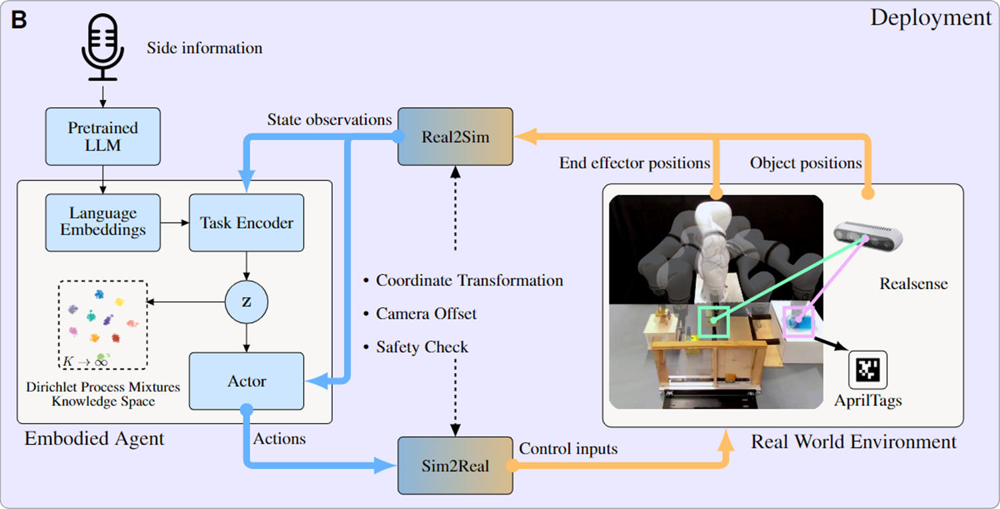

Concept illustration of robotic lifelong reinforcement learning process. (A) Overview illustration of the general lifelong reinforcement learning process. Unlike the conventional multi-task approaches, where agents have simultaneous access to all tasks, a LRL agent can master tasks sequentially one after another. Moreover, the agent should continually accumulate knowledge throughout the process. This concept emulates the human learning process. (B) Our proposed framework under lifelong learning concept. We instruct the deployed embodied agent to perform long-horizon tasks using language commands. The agent accomplishes these tasks through the combination and reapplication of acquired knowledge.

(A) Training: The framework receives language semantic information and environment observations as input to make policy decisions and output action patterns, it trains on only one task at a time. L represents the loss functions and is explained in the Method section ``Upstream task inference''.

(B) Deployment: In the real-world demonstration, the agent parameters remain frozen, the agent receives input signal from real-world hardware and outputs corresponding action signals, both ``sim2real'' and ``real2sim'' modules process the data to align the gap between the simulation and real world.

Contribution of non-parametric knowledge space w/o language embeddings. (A) Average success rate comparison. Comparing LEGION (Gauss) and LEGION (DPMM) provides insights into the contribution of the non-parametric knowledge space. Similarly, comparing SAC (w. Language embeddings) and SAC (w.o. Language embeddings) allows us to assess the contribution of language embeddings.